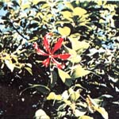
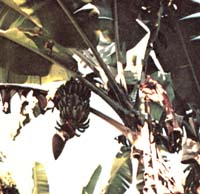
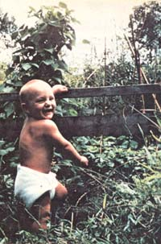
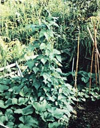
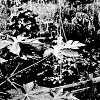
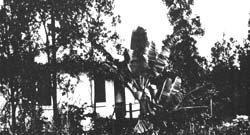
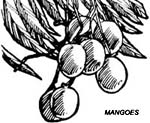

Contrary to popular belief, say Skye and Hollis Osborn and Beverlie Beauclerk, the tropical state of Hawaii is not reserved just for natives, vacationers, or the very wealthy. Back-to-the-landers can find a place for themselves in the Pacific paradise too. Especially if they'll skip seven of the main islands that make up the state ... and head straight for the biggest: Hawaii itself!
Living and growing our own on farms in Idaho and Oregon was better than staying cooped up in some city, you understand. But a long siege of 20-below weather a few winters back finally chilled our enthusiasm for even the country life ... if it had to be lived up north.
So our family of three (mother, father, and 10-year-old) set out on a hunt for sunshine in our VW bus. And a month later-after we'd sold the bus for plane fare-we found it: in Honolulu, on the island of Oahu, in the state of Hawaii.
Yes, Honolulu had sunshine all right ... and magnificent mountains and sandy beaches to curl our toes in. But it also had freeways, traffic, high rents, and too much cement.
"This is no place to raise a new baby," we said (we had just learned that our family of three was about to become four). "And what about me?" our 10-year-old demanded. She had a point too.
So we stored our non-essentials in three orange crates, shouldered our packs, and began a search of our 50th state's outer islands. Five months, two islands, and a lot of frustrations later, we found a small house on the island of Hawaii.
Although it was situated alongside a spectacular river and very close to the local medicine man (who agreed to join in our home birth ritual), this new place we called home still fell far short of being the small tropical paradise-with gardens and goats-we wanted to call our own. And, thanks to our stringent financial condition, there seemed little chance we'd be able to afford anything better as long as we stayed in Hawaii.
Then-just when we'd almost decided to pack up our dreams and skulk back to another cold, wet winter in Oregon-we got our big break. Some friends asked us to take over their lease on two acres of land, complete with two-bedroom house, two dogs, a cat, five chickens, and two small gardens. Best of all, this little mid-Pacific Shangri-La was really located out in the country too: seven and a half miles from a small village and one and a half miles up what darn near qualified as a road. How could we resist?
Our long search for a mini-farmstead washed by warm trade winds and bathed by the tropical sun was finally over, nearly a year after it had started. Now it was time for the hard work to begin!
The gardens we had inherited, although adequate for herbs and legumes, were much too small for our grandiose plans (we planned to eat all our meals straight out of the vegetable patch). So we hauled in bigasse -the crushed, leftover canes from which sugar has been extracted-that the big mills out here are glad to get rid of. When combined with good chicken manure, compost, and whatever other organic material (maybe even a little dirt) we can find lying around on the lava rock which makes up most of our part of the island, this vegetable matter eventually rots down into a decent, workable soil.
We quickly discovered, however, that our mini-farming experiences back in Idaho and Oregon had not really provided us with an ounce of practical knowledge about the growing of greenies in the equatorial zones of the world. Especially on postage stampsized gardens. And particularly when those tiny plots are endowed with very little actual earth ... but with a great deal of lava.
Only about one quarter of the seeds we planted bothered to come up. And either the bugs ate the resulting plants, or they grew up so spindly that we quickly became too embarrassed to even mention the word "garden" to our friends. Obviously we were doing something wrong. Maybe even eight or nine things.
So we swallowed our pride, invited in every neighbor who had a successful vegetable patch, and picked their brains. And eventually we began to understand what agriculture a la Hawaii was all about.
One of our worst mistakes, we soon realized, had been in overlooking the importance of our soil's depth. (We had been so anxious to have a large garden we had failed to notice that the earth in part of the plot was actually too thin to even cover the roots of a self-respecting radish!)
But that problem-once recognized-was easy enough to solve with a lit tle sweat. We simply picked up slabs of lava (they're free for the hauling alongside most bulldozed-out back roads) and used them to build dry rock walls around our new-and smallervegetable patch. Then we shoveled all the soil we could scrape up into the tidier plot (to a depth readily capable of growing 10-foot-tall corn ... no need to be pessimistic) and stood back and admired the calluses on our hands.
We also started all our new seeds in flats (thus saving our garden's precious soil for just the plants that sprouted and also making it possible for us to "succession plant" more crops into the vegetable plot every year).
Next we threw out the straight, wellspaced rows of the traditional produce patch in favor of "cram as many plants as possible into every available square inch" intensive gardening. And, as we transferred each of the sprouted sets into our walled plot, we placed a large quantity of both "boughten" organic fertilizer and ground shells under it.
By this time our scant supply of vegetable-growing dirt had become as precious to us as gold and we wasted none of it on weeds. The unwelcome intruders were pulled and fed to the chickens ... who kindly knocked off the little soil sticking to the volunteer plants, shredded and ate the weeds, and then mixed their resulting droppings into the stray amounts of earth to make a rich additive that we put back on the garden. Nice chickens.
We have, perhaps, taken this "stretching" of "five cents worth of dirt into a thousand-dollar garden" to its logical extreme with our use of old rubber tires. By removing one sidewall of a discarded hulk, turning its tread inside, placing the carcass on bare rock, filling it with soil, and planting seven or eight heads of lettuce inside ... we've reached just about the ultimate in growing much with little soil.
And has all this effort paid off? Only so well that we've become downright obnoxious about our homegrown vegetables. "See," we tell our visiting friends. "See how prolific our tiny patches are. See how the baby gobbles the produce with enthusiasm. See, see, see."
Of course, now that we've learned to garden on little more than the bare lava rock which covers some areas of Hawaii, we're becoming even more anxious to give up our leased two acres and buy a little piece of our own of this paradise. (A piece with real soil on it. Yes, such tracts of land-although expensive-are available.)
In the meantime, we glean all the information we can from hitchhikers, librarians, postal workers, gardeners, and local people about the 4,038 square miles of this big island. There's honest-to-goodness desert, rain forest, mountains (two 13,000-foot-tall volcanoes-Mauna Loa and Mauna Kea-are even capped by winter snows), and cultivated farmlands here and we want to learn all we can about them while our "land purchase" pennies pile up in the bank.
Luckily for us, the parcels of land for sale that we find most desirable (the bigger lots that are farthest from the main highways) ... are also the least expensive! And, since the local power company now charges $1,300 to set in a single utility pole, the chances of suburbia encroaching on the "outback", unelectrified homestead of our dreams seems relatively slim during the next few decades. We're quite content with this state of affairs. And-with patience, persistence, and hard labor-we'll soon be able to purchase our own small chunk of this heaven with the hope that it'll remain unspoiled as long as we live.
As we look for "just the right place" we, of course, keep some very typically Hawaiian considerations uppermost in our minds:
There is more old lava rock on this island than most malihinis (newcomers) ever imagine, and we want to be sure that the land we buy is covered with a thick layer of real dirt.
Nor has there been an end to the formation of that lava! This is a new island-alive and growing-and Pele , the goddess of the volcano, is still active. One must think about rift zones and possible future flows of lava when he or she scouts for property out here.
And, new or old, all that rock lying immediately under Hawaii's surface rules out the possibility of the inexpensively drilled, deep, fresh water wells that are so common on the U.S. mainland. The rain, however, falls abundantly and consistently from remarkably unpolluted skies and it's not difficult to channel that precipitation from a roof or other catchment into 55-gallon drums, a swimming pool, an old-fashioned wooden water tank, or some other large container.
"But," write our mainland friends as they shiver in the winter snows that we've left far behind, "doesn't it cost a lot more to live out there? Isn't everything dreadfully expensive?"
"Well now," we reply, "that depends."
Super consumerism is indeed expensive here. But who needs to be a super consumer in Hawaii anyway? The baby lives in diapers (he wears a T-shirt for dress-up occasions) and the rest of us are nearly as informal. Ninety-nine-cent rubber thongs ( zoris ) are the preferred footwear of almost every kamaaina (old-timer) out here unless he or she spends a great deal of time climbing around on lava (and Army surplus work boots are just the ticket for that). "Good" shoes are reserved for state occasions.
Supermarket fare, we'll admit, can be a little dear. But then, we don't shop in such places anyway. Most of our vegies and fruits come from the garden ... and we get the rest from a food co-op at a maximum 10-15% markup over wholesale cost.
All in all, we figure our living expenses here on the Big Island about equal to what we'd spend day to day back on the mainland. Which means we're getting 365 days a year of above-65° weather, trade winds, sunshine, and tropical afternoon showers thrown in for free.
And that's why our dreams of a hand-built castle on our own little piece of land out here in the middle of the Pacific just keep right on growing as fast (a foot a day) as the 12-foot-tall bean vines in our backyard!
If we were to cut the six-foot-tall grass that hides most of our coffee trees, prune the trees as we should in January, and otherwise restore our mini-plantation ... our cash coffee crop from these three acres should be worth about $3,000 a year.
The trees bloom in February and, by May, are covered with rows of tiny green berries. These berries ripen at various rates of speed and each must be handpicked when it turns red. It takes five pounds of the red berries to produce just one pound of the dark coffee beans you've seen in the grocery store.
Kona coffee trees grow eight to ten feet tall and a small (three-step) ladder is generally used to reach each tree's topmost branches. As the berries are plucked, they're dropped into a handwoven lauhata basket that is strapped to the picker's waist.
The harvested berries are soaked, then pulped, to remove their flesh and expose the actual coffee "beans" . . . which are really double seeds in the center of each berry. The beans are then spread out to dry in open sheds that have sliding roofs which may be pulled over the coffee to protect it during each afternoon's rain.
Once the beans are dry, their thin but tough husks must be removed, and this is usually done with a mechanized husker at a co-op mill. The green, husked beans are either packed for shipment to the mainland at this point ... or roasted, packaged, and sold locally.-BB.
Taro (a tropical plant of the arum family) produces a starchy, tuberous root that local Big Island people eat about as frequently as mainlanders eat potatoes.
The tubers can be purchased in the supermarkets out here and, when planted, will grow and multiply like the roots of a lily. It's then a simple matter to cut off new bulbs as they're created and either eat them ... or replant them to increase the size of a taro patch. You can also cut all but one-half inch of root from a stalk, eat the root, replant the stalk (after pruning off the main part of the plant) ... and then watch the little stub grow into a healthy plant-complate with edible roots!-again.
Several varieties of taro grow here and all contain oxalic acid, an irritant which penetrates the skin and throat like particles of fiberglass. (Some wild taro contains so much of this acid that, even when cooked, its leaves and roots can be fatal.) So, although it's no big deal, it is necessary to break down the crystals of oxalic acid by cooking all taro before it's eaten ... and it's a good idea to be able to identify the most popular varieties of the plant if you want to feast on them.
Dasheen (Japanese taro) has small bulbs, is rich in carbohydrates and proteins, is usually steamed, and tastes a bit like boiled plantain (cooking bananas). One of our Japanese neighbors makes shoyu (local name for soy sauce) chicken by cooking dasheen, green beans, and chicken in a sauce of shoyu, sugar, and ginger.
Tahitian taro is grown for its small, tender leaves which-though acrid when raw-are delicious If cooked like spinach.
Mana taro is well named. It grows so prolifically that it's like manna from heaven. The roots of this variety often weigh five pounds or more and, although they can be used in any recipe that calls for potatoes, they're usually eaten as poi.
Poi, perhaps, can be described as a thin, pink, mashed potato paste ... but with a sweeter, distinctive flavor of its own. It's made by steaming, boiling, or baking taro until a chopstick can be run through the root. The taro is then mashed and a little water at a time is added until just the right consistency is reached. (Some people prefer to dip poi with one finger, others with two, still others with three fingers. And Hawaiian cooks vary their recipes accordingly.) We think that the nicest way to eat mane taro is as two-finger, three-day poi popped into the mouth simultaneously with a bits of roasted wild kalua pig.-BB.
Tropical homesteading on a threeacre coffee plantation on the Kona Coast of Hawaii. What a wonderful way to live!
My husband and I are comfortably "settled in" only two miles from beautiful white sand beaches and emerald water alive with multi-colored fish. Exotic ripe fruits fall invitingly at our feet each evening as we watch a different (and brilliant) Pacific sunset. And, perhaps best of all, it costs us only $75 a month to lease our little paradise!
No, many would-be Big Island settlers are not as fortunate as we've been. They come out here, pay $250 a month for an apartment, spend a year looking around for a few acres of coffee-growing land, never quite find what they want, and finally give up and go back to the mainland. Others (such as ourselves), however, seem to find what they're seeking right away. Maybe because they're searching for something just a little different than what they left back home.
The house we're living in, for instance, is old and tin-roofed and termite-ridden. It has no plumbing and our privy is an outhouse nestled back in a nearby banana grove.
But the place is huge (it once accommodated a mill, a store, and living quarters). And we do have electricity. And our large redwood holding tank (which catches the rain that falls on our corrugated roof) is always full. And we don't really mind carrying water into the house in five-gallon jugs. And we have installed a kitchen sink that drains to a lychee tree in the yard. And we do enjoy our ofuro (the traditional heated Japanese bath) and a cold outdoor shower which feels good on most of our summer-like days.
Mango, papaya, lychee, banana, avocado, grapefruit, orange, mountain apple, and macadamia nut trees surround the house... as do raspberry and passion fruit vines and guava bushes. The kitchen garden-which has been growing wild for years-yields sweet potatoes and several varieties of taro. And enough coffee trees still bear on this long-neglected old plantation to allow us to experiment with home-roastedand-ground beans for breakfast.
No, the life we now live is certainly not for everyone. But we have only to bite into the ambrosia of a sun-warmed mango or dive into the sparkling waters of a friendly neighborhood lagoon to reassure ourselves that it is the life for us. Especially at a base cost of only $75 a month!-Beverlie Beauclerk.
Much of the land in Hawaii is held in large family estates. And, since the local tax structure makes it a money-losing proposition to sell acreage in small blocks, it has become common to lease land out in three- to live-acre parcels. The leases often [1] run for 50 years, and [2] require the lessee to farm his or her parcel and make annual improvements on it.
The government is currently considering a law under which this leased land would be condemned, taken over, and sold to each lessee at a fair market value. In the meantime, there's a moratorium on the renewal of leases or the issuing of new ones.
Which means that about the only way you can get onto a piece of Big Island land right now is by finding someone who wants to give away or sell an existing lease. Lessees, for instance, are currently selling their rights to five-acre tracts for about $10,000 ... which is really a pretty good deal if there are 40 years or so left on the lease.
On the other hand, if you're determined to buy-rather than lease-a chunk of Big Island land, you can sometimes purchase such acreage (it's called "fee simple" land) if you're willing to look long and hard ... and then shell out $30,000 an acre. And that's why most of us out here settle for leasing instead of buying.
One further tip: You're definitely ahead of the game-no matter whether you buy or lease-if the land you settle on already boasts some sort of satisfactory dwelling. Hawaii's current building codes are very similar to those in effect in California (in other words, they're tough ), and they're diligently enforced.-BB.
GUAVA: Grows on large bushes. The skin of the fruit is soft and yellow. The meat inside has a pink, firm texture, is tart, and contains a great deal of vitamin C. Guavas can be eaten fresh and guava juice is commercially canned and widely sold.
LYCHEE: Harvested from large trees. The fruit is red and has a leathery texture. The sweet and almondy flesh inside is somewhat grape-like.
MANGO: This peach-like fruit grows on large trees and tastes like an exotic apricot. Mangoes can be eaten while still green and crisp or after they've be. come ripe, sweet, and soft. Locals prefer them soaked in soy sauce, sugar, and ginger while the mangoes are still green.
PAPAYA: This delicious fruit grows in bunches spiraled around the tops of the trunks of 20-foot-tall, house plantlike trees. Papayas are a very mellow orange-ish yellow when ripe. The fruit's meat has a texture and flavor very much like a cantaloupe melon . . . but different. Papaya seeds, which form in the fruits' hollow centers, look like fish eggs.
PASSION FRUIT: This little delicacy is borne an climbing vines and is eaten after it has dropped to the ground. Passion fruit's amber-colored skin is hard. Eating the fruit is something like sucking an egg ... except that the flavor of this "egg" can best be described as "an explosion of aromatic flowers" in your mouth.-BB.
|
 SKYE AND HOLLIS OSBORN |
 BEVERLIE BEAUCLERK |
 BEVERLIE BEAUCLERK |
|
 SKYE AND HOLLIS OSBORN |
SKYE AND HOLLIS OSBORN |
 |
|
|
 |
 |